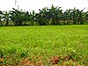

forage
role

Source: Wikipedia
Wikipedia Page (Something wrong with this association? Let us know.)
Wikidata Page (Something wrong with this association? Let us know.)
Occurs in:
- forage-or-residue~removed_nitrogen__mass_fraction
- plant_at-grain-or-forage_harvest-or-death__mass-per-area_density
- plant_root_at-grain-or-forage_harvest-or-death__mass-per-area_density
- forage-or-residue~removed_at-harvest__mass-per-area_yield
- forage-or-residue~removed_nitrogen_at-harvest__mass-per-area_yield